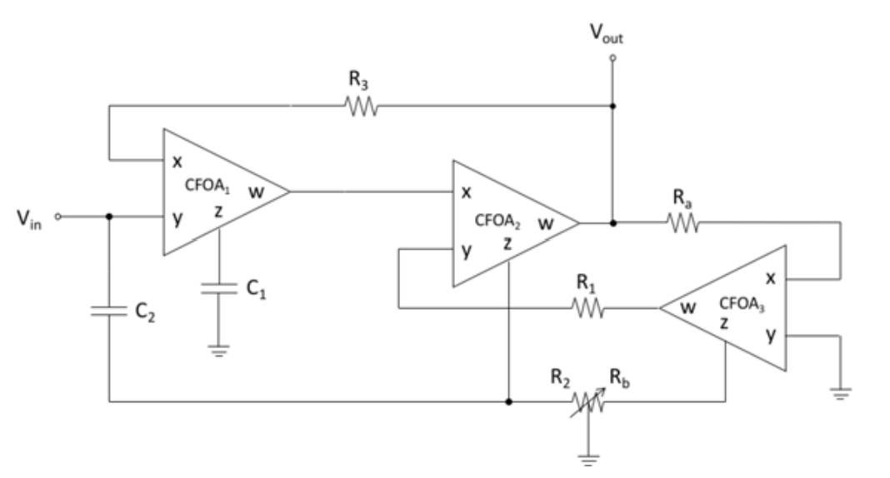

Tunable Comb Filter
Publication: A New CFOA-Based Shadow Analog Comb Filter (JAPED, 2020)
Overview
This project introduces a novel CFOA-based shadow comb filter. The filter cascades multiple shadow notch filters. Each notch’s bandwidth is controlled via the gain of an amplifier using a grounded variable resistor. The design enables independent electronic tuning of each notch’s bandwidth without affecting the center frequency or overall gain. Four notch filters were implemented targeting 1 kHz, 10 kHz, 100 kHz, and 1 MHz.

Features
- Uses commercially available AD844 ICs
- Independently tunable notch bandwidths
- Constant notch frequency and gain during bandwidth tuning
- Low output impedance — easy to cascade
- Minimal component count
Notch Filter Design
Core equations governing the design:
- Center frequency:
- Bandwidth: (when \( R_a = R_1 = R \))
\[ f₀ = \frac{1}{2\pi\sqrt{R_1 R_3 C_1 C_2}} \]
\[ BW = \frac{1}{C_2 R_2} - \frac{R_b}{R_a C_2 R_1} = \frac{1}{R C_2} \left(\frac{R}{R_2} - \frac{R_b}{R}\right) \]

Experimental Results
Experiments validated smooth electronic bandwidth tuning without affecting the notch frequency. As shown below, adjusting a single variable resistor (with inverse control over R2 and Rb) effectively modifies the bandwidth. The measured notch depths at different frequencies were:
- 1 kHz → -56 dB
- 10 kHz → -55 dB
- 100 kHz → -46 dB
- 1 MHz → -36 dB